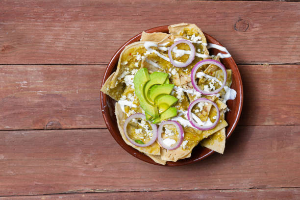

Chilaquiles

Description
An extremly versatile and delicious mexican dish. Easy to make, yet hard to master
Ingredients:
- Sour Cream
- Tortillas
- Cheese (the one you like most)
- Green or red tomatoes
- Protein of your choice (chicken, beef, pork, fish...)
- Garlic
- Chicken stock (optional)
- Salt
- Black pepper
- Chili (not really optional but as much as you like)
- Oil
Steps:
- Blend the tomatoes with the garlic, salt, black pepper and chicken stock or water for a basic sauce.
- Cut tortillas into triangles of whater shape you enjoy the most.
- Fry the cut tortillas until it reaches the crispy texture you desire (very crispy or a little soggy). You could also not fry the tortillas and just put them to the flame for a healthier alternative, just be careful not to burn them.
- Put the resulting tortillas in a bowl or plate of you choosing.
- Shower the tortillas with as much sauce as you want. This is your world.
- Add sour cream.
- Add cheese.
- Add your protein.
- Enjoy the little heaven you've created for yourself, well done.
- Optional: You could also fry a little the sauce, or not do it for a healthier variation.